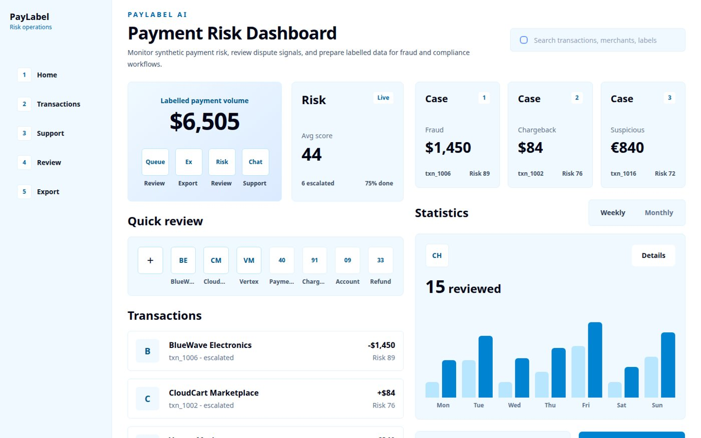
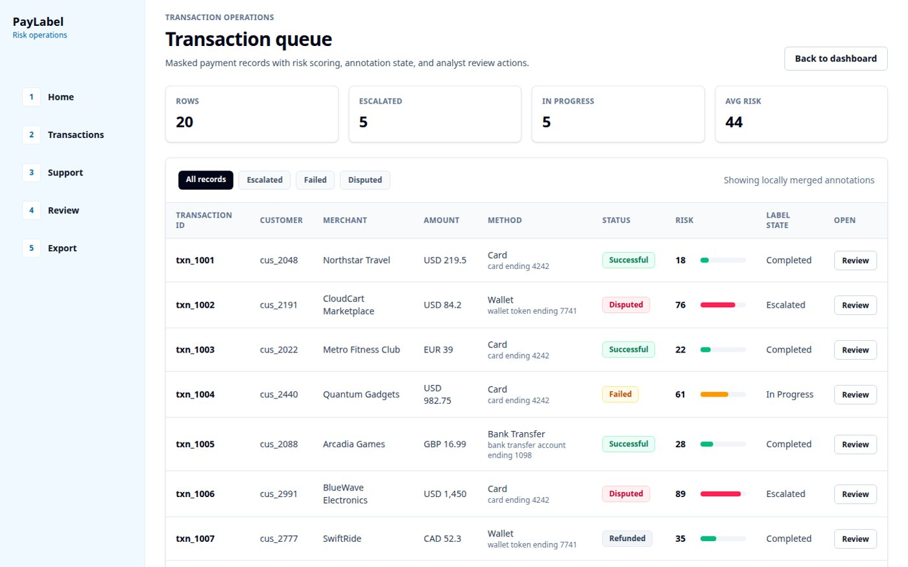
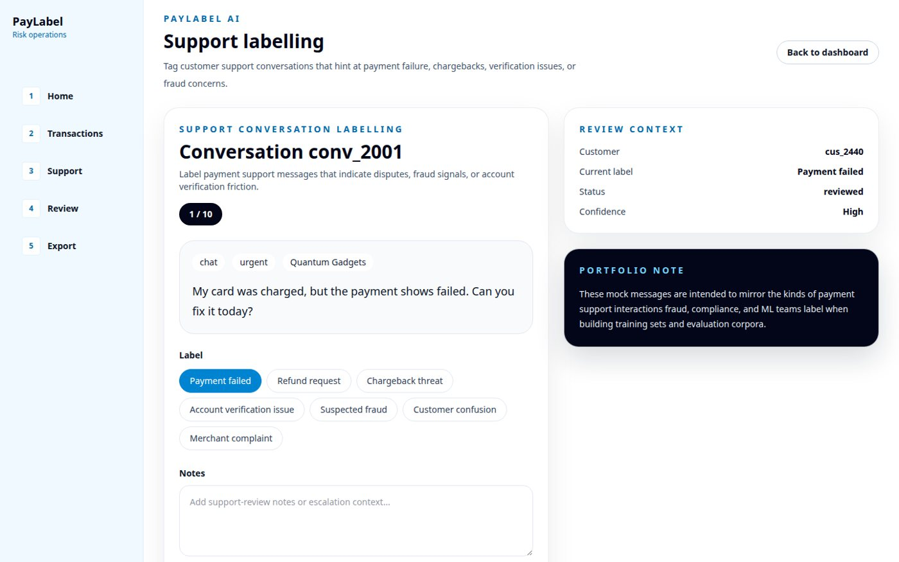

Fintech · AI & Risk
PayLabel AI
Synthetic payments classification, fraud and compliance review workflows.
The challenge
Payment risk and support analysts need review interfaces that distinguish suspicious activity, chargebacks, false positives, potential compliance issues and low-confidence cases while keeping a human decision-maker in the loop.
Objective
Show how payment operations could convert noisy transaction, dispute and support records into consistent review labels for triage, escalation and future analytical or model-training workflows.
Approach
Developed a Next.js/TypeScript demo using synthetic payment events and support conversations. Included annotation queues, transaction detail views, confidence and escalation fields, human review workflows, dashboards and JSON/CSV exports.
Outcomes
Delivered a working demonstration that makes risk-review and labelling workflows tangible, built entirely on synthetic payments data.


